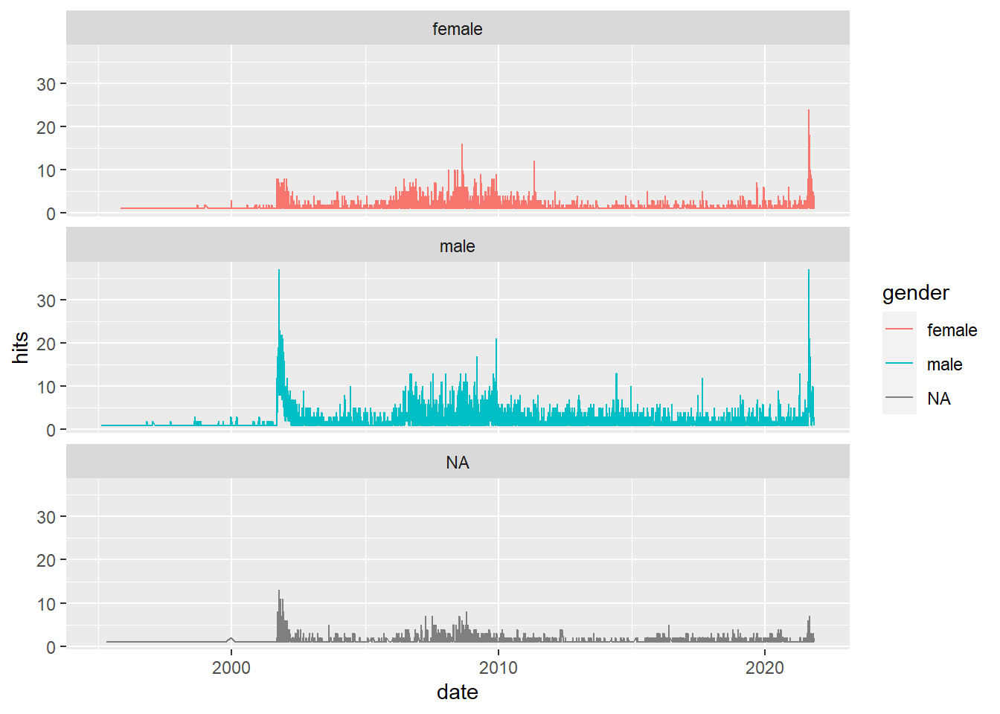

Chapter 17 Adding gender information to NYT_aut
Next up we are going to add a gender to each author (M/F). I found a package
named gender which contains lists of male and female names. We can compare the
names in this dictionary to the name of the authors in our dataset and assign
each author a gender. First we reformat the dataframe a little bit.
#reformatting the dataframe so it can enter the "gender_df" function below
NYT_aut <- NYT_aut %>% mutate(
firstname = as.character(firstname),
year = 2012
)Then we use the function gender_df to predict the gender of all the authors in our dataset.
#the function gender_df predicts gender using a coloumn of names from a dataframe
gender_basic <- gender_df(
NYT_aut,
name_col = "firstname",
year_col = "year"
)Then we merge the dataframes gender_basic and NYT_aut. This is a little messy but it works.
#renaming the column containing names so it can merge back with df
gender_basic <- gender_basic %>%
rename(firstname = name)
#joining the two dataframes "NYT_aut" and "gender_basic". NYT_aut contains duplicates of
#author, since each author wrote several articles in the period where the data
#was collected. We deal with these duplicates by adding a row number, so
#each author gets two keys to join by.
NYT_aut <- left_join(NYT_aut %>% group_by(firstname) %>% mutate(id = row_number()),
gender_basic %>% group_by(firstname) %>% mutate(id = row_number()),
by = c("firstname", "id"))Finally we remove the extra columns created by the function gender_df which we dont need.
#removing the extra columns created by the function "gender_df"
coloumns_to_remove = c("year", "id", "proportion_male", "proportion_female", "year_min", "year_max")
NYT_aut <- NYT_aut %>%
select(-(coloumns_to_remove))We save the dataframe
write_csv(NYT_aut, "data/new_york_times/data_additional/NYT_clean_author_cp18.csv")Now we have successfully assigned a gender to each author. Lets inspect this. Let’s see how many male, female and missing authors there are in the dataset.
#checking how many males, females and NA's there are
NYT_aut %>%
#removing duplicates
distinct(full_name, .keep_all = TRUE) %>%
group_by(gender) %>%
summarize(count = n()) %>%
knitr::kable(caption = "The number of authors by gender",
col.names = c("Gender", "Count"))| Gender | Count |
|---|---|
| female | 764 |
| male | 1610 |
| NA | 370 |
Table 17.1 shows that there are 764 female authors and 1610 male authors, meaning that there are approximately 2 times male authors compared to female authors. This is quite the difference.
Moreoever, there are 370 NA’s meaning that the names of 370 authors could not be found in the database from the package gender. What is the deal with these NA’s? Lets see which author names cannot be assigned to a gender (M/F).
NYT_aut %>%
distinct(full_name, .keep_all = TRUE) %>%
filter(is.na(gender)) %>%
select(firstname, full_name) %>%
head(15) %>%
knitr::kable(caption = "The firstname and full names of authors where the gender-package failed to assign a gender",
col.names = c("First name", "Full Name"))| First name | Full Name |
|---|---|
| Barnett | Barnett_Rubin |
| International | International_Tribune |
| Milt | Milt_Bearden |
| Tunku | Tunku_Varadarajan |
| Barth | Barth_Healey |
| Was | Was_Mr |
| Geoff | Geoff_Nicholson |
| Katha | Katha_Pollitt |
| Pankaj | Pankaj_Mishra |
| C. | C._Chivers |
| Thom | Thom_Shanker |
| R. | R._Apple |
| Javaid | Javaid_Khan |
| From | From_WIRE |
| Somini | Somini_Sengupta |
Here we can see the firstname of authors which the gender-package failed to recognize. These seem like the names of immigrants and some weird names.
Some more gender stuff over time
NYT_aut %>%
group_by(date, gender) %>%
tally() %>%
ggplot() +
aes(x=date, y=n, color = gender) +
geom_line() +
labs(y = "hits") +
facet_wrap(~gender, nrow = 3)